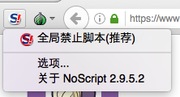

插件、附加组件和 JavaScript
Flash 播放器
某些如 Vimeo 等视频网站使用 Flash Player 插件来播放内容。而非常遗憾地，此插件程序是独立运行的软件，件且完全不遵循 Tor 浏览器之代理服务器设置。因此若启用此插件程序，您的真实网络地址将会直接公开给网站的管理员以及任何正在网络上监听的恶意人士所知，故在 Tor 浏览器中 Flash Player 为默认关闭，在此也不建议您去启用它。
某些视频网站（例如 YouTube）有提供不需使用 Flash Player 插件的视频播放器，此类型的在线视频播放方式可与 Tor 浏览器兼容。
JavaScript
JavaScript 是一种内嵌于网页中的编程语言，它可以提供网站的各种交互式组件，像是视频、音乐、动画、时间状态等。而遗憾的是，JavaScript 也可能被利用来发动破解浏览器安全防护机制的攻击，其结果有可能会让用户的真实身份曝光。
Tor Browser includes an add-on called NoScript, accessed through the “S” icon at the top-left of the window. NoScript allows you to control the JavaScript (and other scripts) that runs on individual web pages, or block it entirely.

Users who require a high degree of security in their web browsing should set Tor Browser’s Security Slider to “Safer” (which disables JavaScript for non-HTTPS websites) or “Safest” (which does so for all websites). However, disabling JavaScript will prevent many websites from displaying correctly, so Tor Browser’s default setting is to allow all websites to run scripts in "Standard" mode.
浏览器附加组件
Tor 浏览器基于 Firefox，任何兼容 Firefox 的附加组件和主题都可以在 Tor 浏览器中安装。
但是，仅 Tor 浏览器默认自带的附加组件经过了适用 Tor 浏览器的测试。安装任何其他的浏览器附加组件可能破坏 Tor 浏览器的功能或导致更严重的问题，包括影响您的隐私与安全性。强烈建议您不要安装额外的附加组件，Tor 项目不为这些配置提供支持。